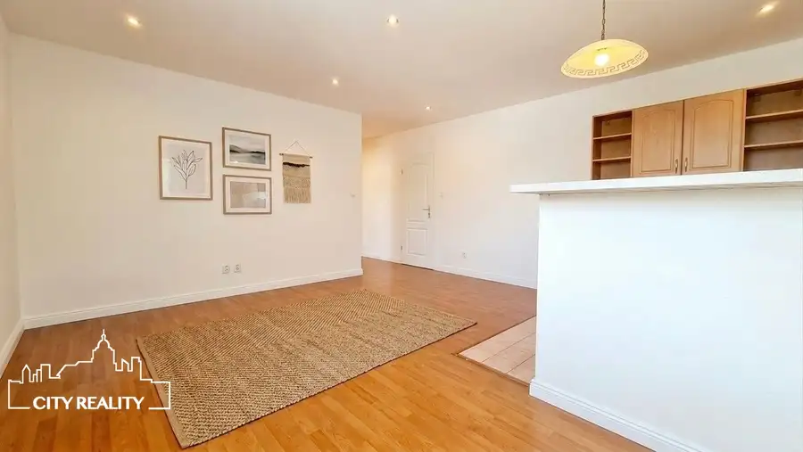
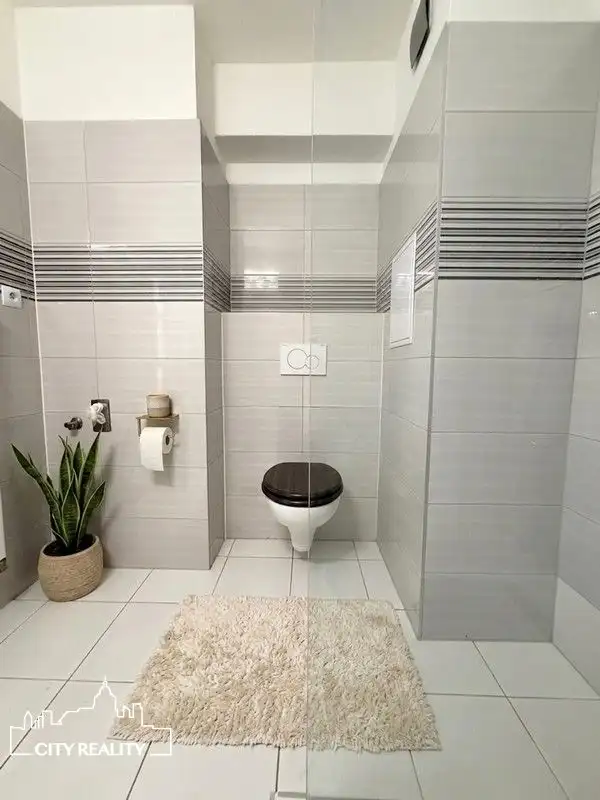
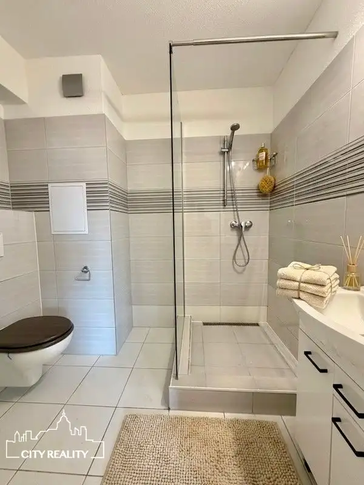
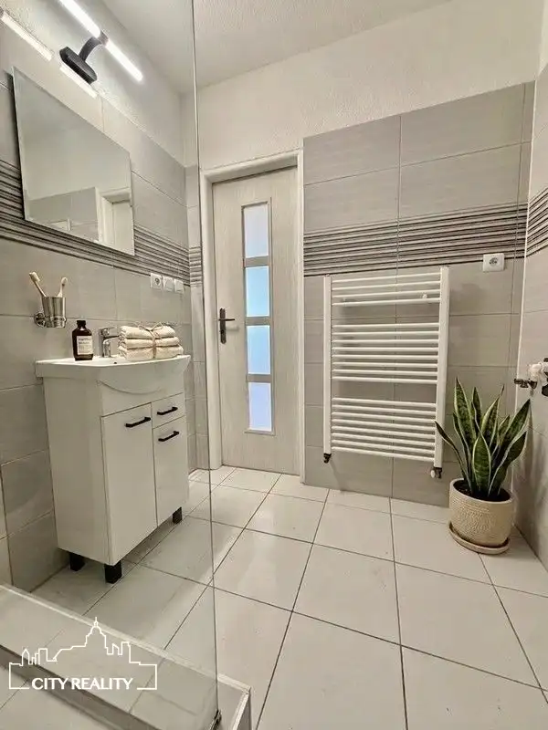
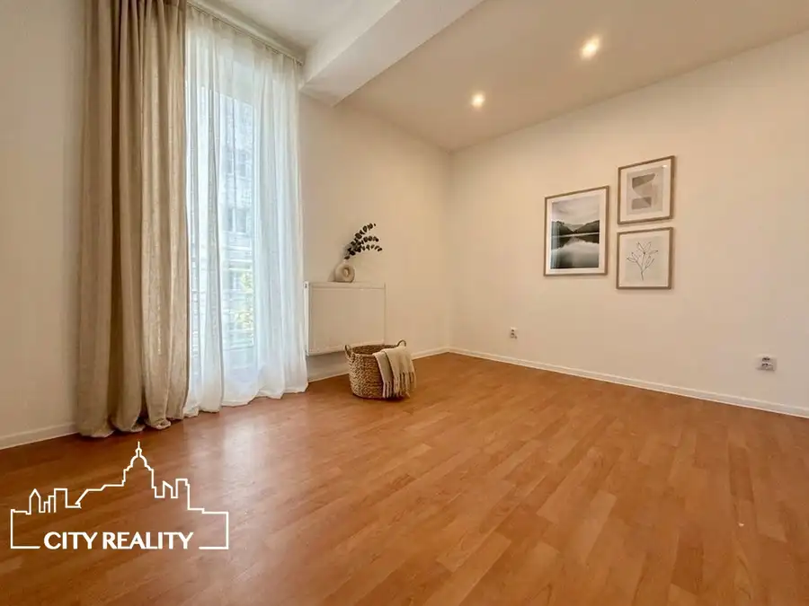
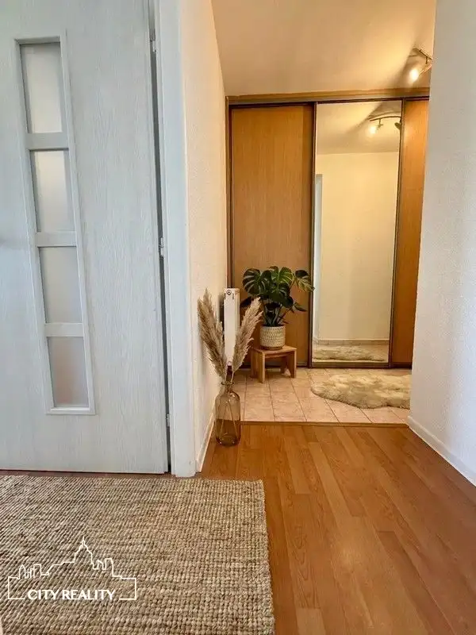

Zrekonštruovaný 2-izbový byt s výťahom | Centrum Prievidze | Voľný ihneď
Prievidza







- Dispozícia2-izbový
- Plocha52 m²
- Poschodie2. z 3
- StavKompletná rekonštrukcia
- VlastníctvoOsobné
- Energetická triedaB
O nehnuteľnosti
Ak hľadáte bývanie, kde nemusíte nič prerábať a zároveň chcete mať centrum mesta doslova na skok, tento byt by Vás mohol zaujať.CITY REALITY Vám exkluzívne ponúka na prenájom kompletne zrekonštruovaný 2-izbový byt s výmerou 52,92 m², nachádzajúci sa len pár krokov od centra mesta Prievidza.Byt sa nachádza na 2. poschodí z 3 v zateplenom bytovom dome s priestranným moderným výťahom, ktorý zabezpečuje pohodlný prístup.Dispozične pozostáva zo samostatnej spálne, kuchyne spojenej s obývacou izbou, kúpeľne so sprchovým kútom spojenej s WC a vstupnej chodby.Byt prešiel kompletnou rekonštrukciou. Samozrejmosťou sú plastové okná so žalúziami, nové rozvody elektriny, vody a kúrenia, nové omietky a stierky, plávajúce podlahy a keramická dlažba v kúpeľni aj kuchyni.Moderný vzhľad interiéru dotvárajú znížené sadrokartónové stropy s bodovým osvetlením, nové interiérové aj vstupné dvere a nové radiátory.Kuchyňa je vybavená kuchynskou linkou s plynovým sporákom, digestorom a americkou chladničkou.Veľkým benefitom je priestranná vstavaná skriňa na chodbe, ktorá ponúka dostatok úložného priestoru.Byt je voľný ihneď a pripravený privítať svojho nového nájomcu.-Podmienky prenájmu-vhodný pre maximálne 2 dospelé osoby-bez detí a domácich zvierat-minimálna doba nájmu je 1 rokCena prenájmu 480 € / mesiac vrátane energiíPri podpise nájomnej zmluvy sa uhrádza:480 € – nájom za prvý mesiac,480 € – vratný depozit,480 € – odmena realitnej kancelárie.Spolu pri podpise nájomnej zmluvy: 1440€.Internet a TV si nájomca zabezpečuje vo vlastnej réžii.Prečo práve tento byt? výborná poloha len pár krokov od centra mesta kompletná rekonštrukcia priestranný moderný výťah praktická dispozícia veľká vstavaná skriňa s množstvom úložného priestoru voľný ihneďTechnické informácie: Byt sa prenajíma bez balkóna a bez pivnice.Michaela MajtenyiCITY REALITYt. č. +421 944 514 972mail: majtenyi@cityreality.sk
Parametre
- Bezpečnosť
- Kamerový systém, Bezpečnostné dvere, Elektronický zámkový systém
- Cena vrátane energií
- Nie
- Doprava
- Diaľkový autobus, Cyklistická infraštruktúra, Cesta, MHD
- Druh
- 2 izbový byt
- Dátum zverejnenia
- 02. 07. 2026
- Energetický certifikát budovy
- B
- Orientácia
- Severozápadná
- Podlažie
- 2
- Počet izieb / miestností
- 2
- Počet nadzemných podlaží
- 3
- Počet spální
- 1
- Príprava teplej vody
- Prietokový ohrievač (plynový)
- Stav nehnuteľnosti
- Kompletná rekonštrukcia
- Telekomunikácie
- Optická sieť
- Typ
- Prenájom
- Typ konštrukcie
- Tehlová
- Umiestnenie
- Ďalšie nadzemné podlažie
- Vlastníctvo
- Osobné
- Vybavenie
- Verejné parkovanie, Výťah, Bezbariérový prístup, Detské ihrisko, Zabezpečovacie zariadenie
- Vybavenie objektu
- Štandardné
- Vykurovanie
- Lokálne
- Zariadenie
- Nezariadené
- Zdroj tepla
- Zemný plyn
- Úžitková plocha
- 52 m²
Kde to je


Mohlo by Vás zaujímať
 BytNové
79 999 €ZNÍŽENÁ CENA! Ponúkame Vám na predaj 3. izb. byt, 63,4 m2, ul. Boriny, Sebedražie
Sebedražie
3-izbový63.4 m²3. podlažie
BytNové
79 999 €ZNÍŽENÁ CENA! Ponúkame Vám na predaj 3. izb. byt, 63,4 m2, ul. Boriny, Sebedražie
Sebedražie
3-izbový63.4 m²3. podlažie
 BytNové
79 999 €Veľkometrážny 3-izbový byt s loggiou | Handlová – Okružná | 70,5 m²
Handlová
3-izbový71 m²6. podlažie
BytNové
79 999 €Veľkometrážny 3-izbový byt s loggiou | Handlová – Okružná | 70,5 m²
Handlová
3-izbový71 m²6. podlažie
 DomNové
95 000 €ZNÍŽENÁ CENA! Ponúkame Vám na predaj 3. izbový rodinný dom, pozemok 952 m2, Veľká Čausa
Veľká Čausa
164.5 m²
DomNové
95 000 €ZNÍŽENÁ CENA! Ponúkame Vám na predaj 3. izbový rodinný dom, pozemok 952 m2, Veľká Čausa
Veľká Čausa
164.5 m²